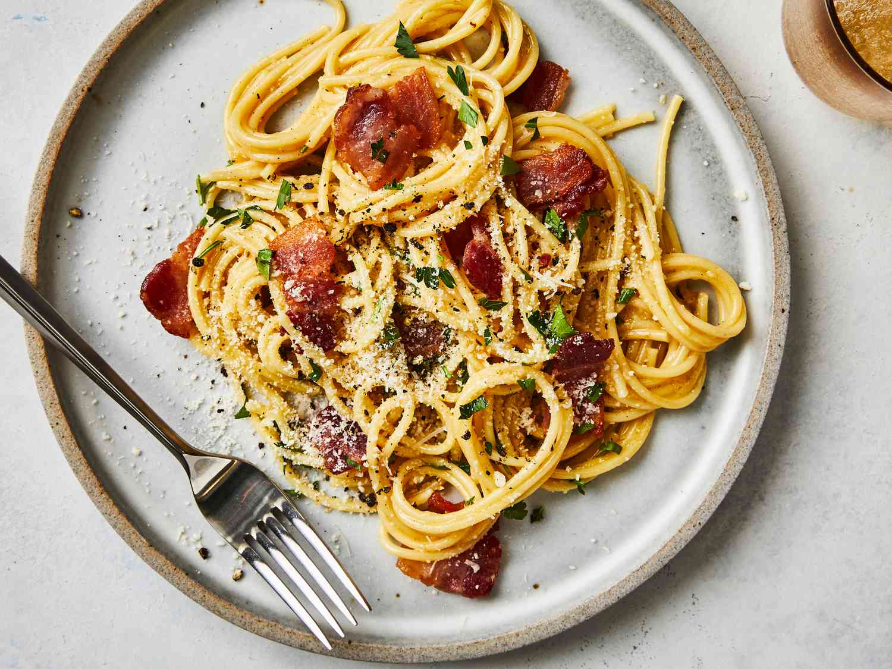

Home
Spaghetti Carbonara

An iconic Roman pasta dish made by tossing hot spaghetti with crispy cured pork, sharp pecorino cheese, and whisked eggs. The heat of the pasta gently cooks the eggs into a rich, glossy, and velvety sauce without needing any heavy cream, producing pure comfort food perfection.
Ingredients -
- Pasta
- meat
- Eggs
- Cheese
- Seasoning
- Salt
Steps to make the Spaghetti Carbonara-
-
Cook spaghetti in salted boiling water until al dente; reserve ½ cup of starchy pasta water.
-
Sauté guanciale or pancetta in a skillet over medium heat until browned and crisp; turn off heat.
-
Whisk eggs, egg yolk, grated cheese, and plenty of cracked black pepper in a small bowl.
-
Toss hot drained pasta into the skillet with the pork, letting the pan cool slightly.
-
Pour in egg-cheese mixture and a splash of reserved pasta water, stirring vigorously until a smooth, glossy sauce coats the noodles. Serve immediately.